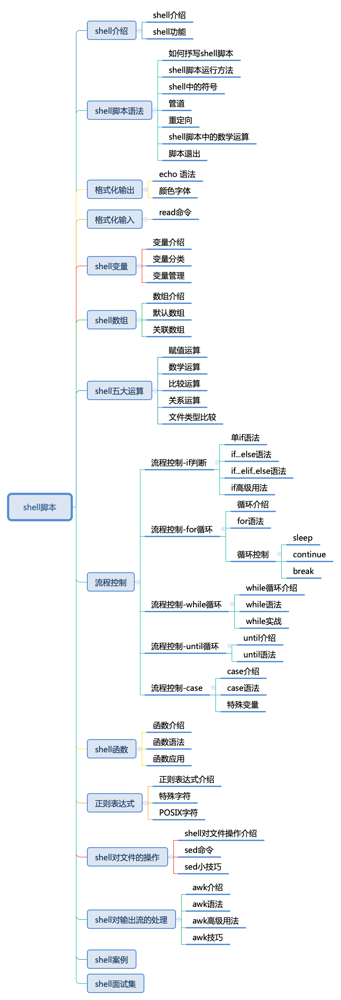

-

- 第1章 计算机基础
- 第2章 网络基础
- 第3章 linux从入门到精通
-
第4章 Linux服务器部署实战
- 4.1 DHCP服务器-DHCP服务
- 4.2 DHCP服务器-ip获得抓包
- 4.3 DNS服务器
- 4.4 文件服务-FTP文件服务器
- 4.5 文件服务-FTP文件服务器-FTP部署实战
- 4.6 文件服务-samba服务器
- 4.7 文件服务-NFS文件服务器
- 4.8 分布式存储服务
- 4.9 ipsan设备共享
- 4.10 IPSAN多链路部署
- 4.11 web服务器软件
- 4.12 web服务器-Apache
- 4.13 web服务器-apache安装
- 4.14 web服务器-apache默认网站
- 4.15 web服务器-apache虚拟主机
- 4.16 部署LAMP-mysql 安装
- 4.17 部署LAMP-PHP安装
- 4.18 部署LAMP-LAMP平台集成
- 4.19 部署LAMP-WordPress站点上线
- 4.20 apache站点优化—长连接
- 4.21 apache站点优化—静态缓存
- 4.22 apache站点优化—数据压缩
- 4.23 apache站点优化--限速
- 4.24 apache安全—用户访问控制
- 4.25 apache安全—用户访问控制
- 4.26 apache安全—用户登录验证
- 4.27 apache URL重写
- 4.28 apache压力测试
- 4.29 web服务器-nginx
- 4.30 web服务器-nginx安装部署
- 4.31 web服务器-nginx配置文件
- 4.32 web服务器-nginx默认网站
- 4.33 web服务器-nginx虚拟主机
- 4.34 web服务器-nginx反向代理
- 4.35 web服务器-nginx下载限速
- 4.36 web服务器-nginx-URL重写
- 4.37 web服务器-nginx优化
- 4.38 web服务器-tomcat
- 4.39 网络代理服务器-VPN
- 4.40 批量部署-kickstart
- 4.41 批量部署-cobbler
- 4.42 双机热备-rsync
- 4.43 源码管理-git
- 4.44 源码管理-svn
- 第5章 linux监控
-
第6章 shell脚本
- 6.1 shell引言
- 6.2 shell 介绍
- 6.3 shell 语法
- 6.4 shell格式化输出
- 6.5 shell基本输入
- 6.6 shell变量
- 6.7 数组
- 6.8 shell流程控制-if判断语句
- 6.9 shell流程控制-if判断语句-代码&job
- 6.10 shell流程控制-for循环语句
- 6.11 shell流程控制-for循环语句-代码&job
- 6.12 shell流程控制-while循环语句
- 6.13 shell流程控制-while循环语句-代码&job
- 6.14 shell流程控制-until循环语句
- 6.15 shell流程控制-case条件判断语句
- 6.16 shell函数
- 6.17 shell函数-job
- 6.18 shell-正则表达式
- 6.19 shell对文件的操作
- 6.20 shell对文件的操作-job
- 6.21 shell对输出流的处理
- 6.22 shell对输出流的处理-job
- 第7章 linux集群
- 第8章 mysql数据库
shell引言
阅读量: 4560
shell脚本
日常运维工作大部分是一些繁琐的重复的工作，每天80%的工作就是重复干昨天的事情，而且工作量还比较大，那么摆在运维面前的选择就是:
A：自己搞定一切
B：让机器搞定一切
当然，谁不愿意喝着茶水，逗着前台妹子过完愉快的一天呢！如何让机器搞定一切，得以解放自己，就是我们本门课程的主旨。shell脚本是你入门最快、最高效的一个脚本语言。
我主要给大家讲解了shell的语法及应用，还有大量的案例让大家去学习，去思考！希望大家能学好shell的同时去写好shell，我把shell学习分成了几个阶段，大家逐步提升就好。
1）能看懂shell脚本
2）能改shell脚本
3）能自己写shell脚本
4）能优化shell脚本
好了，经过这几个阶段你就是shell大神了，everybody，let’go
shell课程大纲
